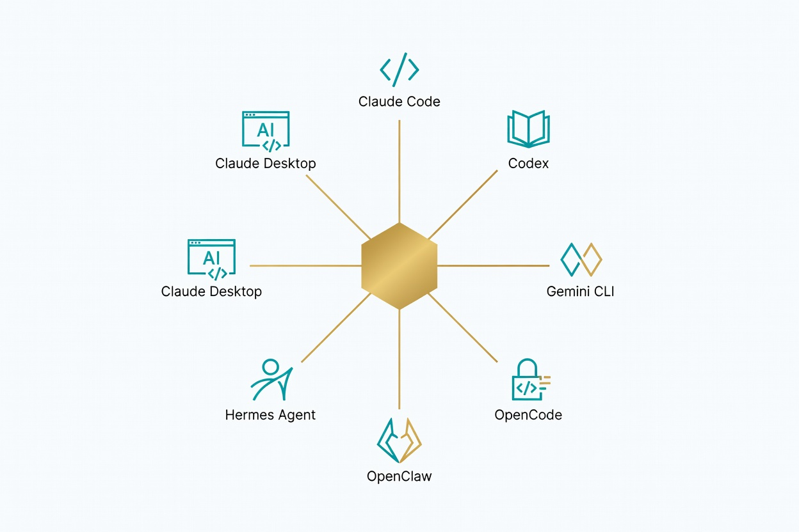

CC Switch 完全使用指南
一个桌面应用，统管所有 AI 编程 CLI 工具 — 供应商、MCP、Prompts、Skills 一站搞定
1 为什么需要 CC Switch
2025 年以来，AI 编程 CLI 工具迎来爆发式增长。Claude Code、Codex、Gemini CLI、OpenCode……每一款都功能强大，但当你同时使用多个工具时，管理噩梦也随之而来：

API Key 散落各处
每个工具有自己的配置文件，官方 Key、中转 Key、多个账号来回切换，容易混淆。
MCP 重复配置
同一个 MCP 服务器要在 Claude Code 配一遍，又在 OpenCode 配一遍，同步困难。
Prompts 文件碎片化
CLAUDE.md、AGENTS.md、GEMINI.md 分散在各项目目录，内容难以统一维护。
用量无法追踪
不同供应商的账单各看各的，不知道一个月到底花了多少钱。
💡 CC Switch 的解决思路
把所有 AI 编程 CLI 工具的供应商配置、MCP 服务器、Prompts、Skills、用量统计收归到一个统一的桌面应用里，通过系统托盘一键切换，彻底告别手动编辑配置文件的时代。
2 CC Switch 是什么
CC Switch 是一个开源桌面应用，专为 AI 编程 CLI 工具设计的统一工作流管理器。它不是一个 IDE 插件，而是一个独立的桌面客户端，运行在系统托盘中，随时可用。
支持的工具一览
架构总览
数据存储结构
| 路径 | 用途 | 说明 |
|---|---|---|
~/.cc-switch/cc-switch.db | 主数据库 | SQLite 格式，存储所有供应商、MCP、会话等数据 |
~/.cc-switch/settings.json | 应用设置 | UI 偏好、代理配置、同步设置 |
~/.cc-switch/backups/ | 自动备份 | 定时备份数据库，支持一键恢复 |
~/.cc-switch/skills/ | 技能目录 | 安装的所有 Skills 存放于此 |
3 安装与配置
3.1 各平台安装
macOS（推荐 Homebrew）
# 使用 Homebrew 安装（最简单）
brew install --cask cc-switch
# 验证安装
ls /Applications/CC\ Switch.appWindows
# 方式一：下载 MSI 安装包（推荐）
# 访问 GitHub Releases 页面下载最新 .msi 文件
# 双击安装即可
# 方式二：下载 Portable ZIP（免安装）
# 解压到任意目录，运行 cc-switch.exeLinux
# Arch Linux (AUR)
paru -S cc-switch
# Debian / Ubuntu
wget https://github.com/anthropics/cc-switch/releases/latest/download/cc-switch_amd64.deb
sudo dpkg -i cc-switch_amd64.deb
# Fedora / RHEL
sudo rpm -i cc-switch_x86_64.rpm
# 通用 AppImage
chmod +x cc-switch.AppImage
./cc-switch.AppImage3.2 首次启动与配置导入
-
启动 CC Switch
安装完成后打开应用，系统托盘会出现 CC Switch 图标（⚡）。 -
导入现有配置
首次启动时，CC Switch 会自动检测已安装的 CLI 工具，并提示你导入现有配置。它会自动扫描以下路径：# Claude Code 配置 ~/.claude/settings.json ~/.claude/.credentials.json # Codex 配置 ~/.codex/config.toml # Gemini CLI 配置 ~/.gemini/settings.json # OpenCode 配置 ~/.config/opencode/config.json -
添加第一个供应商
点击左侧导航栏的「供应商」，从 50+ 预设供应商中选择，或点击「自定义」添加私有 API。 -
测试连通性
添加供应商后，点击「测试连接」按钮验证 API Key 是否有效。
4 核心功能详解
4.1 供应商管理
供应商管理是 CC Switch 的核心功能。你可以把它理解为一个「AI API Key 的密码管理器」。
添加供应商
- 打开 CC Switch → 左侧导航「供应商」
- 点击右上角「+ 添加供应商」
-
从预设列表中选择（如
Anthropic Official、OpenAI Official），或选择「自定义」手动配置 - 填入 API Key，选择模型偏好
- 点击「测试连接」确认有效 → 保存
系统托盘快速切换
这是 CC Switch 最实用的功能之一。点击系统托盘图标，即可看到所有已配置的供应商列表，一键切换当前活跃的 API 提供商。切换后，所有已配置的 CLI 工具会自动使用新的供应商。
- Claude Code：支持热切换，无需重启终端
- Codex：需要重启终端才能生效（冷切换）
- Gemini CLI：支持热切换
- OpenCode：支持热切换
4.2 本地代理与故障转移
CC Switch 内置了一个轻量级本地代理服务器，提供以下高级能力：
| 功能 | 说明 | 适用场景 |
|---|---|---|
| 格式转换 | 自动在不同 API 格式之间转换（如 OpenAI ↔ Anthropic） | 使用 Anthropic 模型接入 OpenAI 兼容端点 |
| 自动故障转移 | 主供应商不可用时自动切换到备用供应商 | 保障 7×24 不间断使用 |
| 熔断器 | 连续失败 N 次后暂时禁用某供应商 | 避免反复请求已宕机的服务 |
| 健康监控 | 实时监控各供应商的响应时间和可用状态 | 快速定位性能问题 |
配置故障转移链
# 在 CC Switch 中设置供应商优先级：
# 主供应商: Anthropic Official (优先级 1)
# 备用供应商: 中转服务 A (优先级 2)
# 兜底供应商: 中转服务 B (优先级 3)
# 熔断器配置：
# - 连续失败次数: 3
# - 熔断恢复时间: 60 秒
# - 健康检查间隔: 30 秒4.3 统一 MCP 管理
MCP（Model Context Protocol）是让 AI 工具调用外部服务能力的协议。CC Switch 提供了一个面板管理所有工具的 MCP 服务器，并支持双向同步。
添加 MCP 服务器
- 打开 CC Switch → 左侧导航「MCP」
- 点击「+ 添加 MCP 服务器」
- 选择服务器类型：
- Stdio：本地命令行工具（如
filesystem-server、sqlite-server） - SSE：远程 HTTP 服务
- Stdio：本地命令行工具（如
- 填写配置信息（命令、参数、环境变量等）
- 勾选要同步到的目标工具（Claude Code / Codex / OpenCode 等）
- 点击保存 → 自动写入各工具的配置文件
双向同步机制
❌ 没有 CC Switch 之前
# 在 Claude Code 中手动添加
~/.claude/mcp.json ← 手动编辑
# 在 OpenCode 中再添加一遍
~/.config/opencode/mcp.json ← 再编辑
# 改了一个忘了另一个 → 不同步✅ 使用 CC Switch 之后
# 在 CC Switch 面板添加一次
CC Switch MCP 面板 ← 统一配置
# 自动同步到所有勾选的工具
~/.claude/mcp.json ✅ 自动写入
~/.config/opencode/mcp ✅ 自动写入4.4 Prompts 管理
每个 AI 编程工具都有自己的系统提示词文件格式：
| 工具 | Prompt 文件 | 存放位置 |
|---|---|---|
| Claude Code | CLAUDE.md | 项目根目录 / ~/.claude/CLAUDE.md |
| OpenClaw | AGENTS.md | 工作区根目录 |
| Gemini CLI | GEMINI.md | 项目根目录 / ~/.gemini/GEMINI.md |
| Codex | AGENTS.md | 项目根目录 |
CC Switch 的 Prompts 管理器提供：
- Markdown 编辑器：内置语法高亮、实时预览
- 模板库：预设常用 Prompt 模板（代码审查、TDD、重构等）
- 跨应用同步：一份 Prompt 内容自动适配不同工具的文件格式
- 版本历史：自动保存每次修改，支持回滚
4.5 Skills 管理
Skills（技能）是可复用的工作流扩展包，通常包含 Prompt 模板、脚本和配置文件。CC Switch 提供了技能的一键安装和管理。
安装方式
# 方式一：从 GitHub 安装
# 在 CC Switch → Skills 页面，粘贴 GitHub 仓库 URL
# 例如: https://github.com/user/awesome-skill
# 方式二：从本地 ZIP 安装
# 下载 ZIP 文件后，拖拽到 CC Switch 的 Skills 页面
# 方式三：命令行安装
cc-switch skills install https://github.com/user/skill-name安装后的 Skills 存放在 ~/.cc-switch/skills/ 目录下，CC Switch 会自动将其链接到对应工具的技能目录。
4.6 用量统计
CC Switch 通过本地代理层记录每一次 API 调用，提供跨供应商的统一用量视图：
| 统计维度 | 说明 | 可视化 |
|---|---|---|
| 支出金额 | 按供应商、按工具、按时间统计实际花费 | 折线图 + 饼图 |
| 请求次数 | 每日/每周/每月的 API 调用次数 | 柱状图 |
| Token 用量 | 输入/输出 Token 分别统计 | 堆叠面积图 |
| 模型分布 | 各模型的使用占比 | 环形图 |
~/.cc-switch/cc-switch.db），不会上传到任何服务器。你可以通过「导出」功能生成 CSV 报告。
4.7 会话管理
CC Switch 可以浏览、搜索和恢复所有已配置 CLI 工具的会话历史：
- 跨工具浏览：在一个界面查看 Claude Code、Codex、Gemini CLI 等所有工具的会话
- 全文搜索：按关键词、日期、工具类型筛选会话
- 会话恢复：一键恢复之前的会话上下文继续工作
- 标签管理：为重要会话添加标签，方便归档和查找
4.8 云同步
如果你有多台设备，CC Switch 支持通过云存储同步配置：
配置云同步
- 打开 CC Switch → 设置 → 同步
- 选择云存储提供商
- 授权登录（或填写 WebDAV 地址）
- 选择同步内容：
- ✅ 供应商配置（不含 API Key — 安全考虑）
- ✅ MCP 服务器配置
- ✅ Prompts 模板
- ✅ Skills 列表
- ⬜ API Key（默认不同步，可手动开启加密同步）
- 点击「立即同步」完成首次上传
5 与 Claude Code 配合使用
🟠 Claude Code 是 Anthropic 官方的编程 CLI 工具，也是 CC Switch 最深度集成的工具之一。
5.1 管理多个 API Key
很多开发者同时使用 Anthropic 官方 API 和第三方中转服务。CC Switch 让这一切变得简单：
-
添加 Anthropic 官方供应商
CC Switch → 供应商 → 添加 → 选择Anthropic Official→ 填入官方 API Key -
添加中转服务
供应商 → 添加 → 选择对应的中转预设（如OpenRouter）→ 填入中转 Key -
一键切换
点击系统托盘图标 → 选择要使用的供应商 → Claude Code 下一次请求自动使用新 Key
5.2 通过 Prompts 管理 CLAUDE.md
CC Switch 的 Prompts 编辑器可以直接编辑和同步 CLAUDE.md 文件：
# 在 CC Switch Prompts 编辑器中编写
## 项目规范
- 使用 TypeScript 严格模式
- 所有函数必须有 JSDoc 注释
- 测试覆盖率不低于 80%
## 代码风格
- 优先使用函数式编程范式
- 变量命名使用 camelCase
- 常量使用 UPPER_SNAKE_CASE
## 禁止事项
- 不要使用 any 类型
- 不要使用 console.log（用 logger 替代）编辑完成后，点击「同步到 Claude Code」，CC Switch 会自动将内容写入 ~/.claude/CLAUDE.md。
5.3 MCP 服务器统一管理
在 CC Switch 中添加的 MCP 服务器会自动同步到 Claude Code 的配置文件：
# CC Switch 自动写入的 Claude Code MCP 配置
# 文件: ~/.claude/mcp.json
{
"mcpServers": {
"filesystem": {
"command": "npx",
"args": ["-y", "@modelcontextprotocol/server-filesystem", "/path/to/dir"]
},
"sqlite": {
"command": "npx",
"args": ["-y", "@modelcontextprotocol/server-sqlite", "/path/to/db"]
}
}
}5.4 常用工作流
🔄 日常开发工作流
- 打开 CC Switch → 确认当前活跃供应商
- 启动 Claude Code → 开始编程
- 如果官方 API 限额用完 → 系统托盘切换到中转服务 → 继续编程
- 工作结束后 → CC Switch 查看本次会话的 Token 消耗
6 与 Codex 配合使用
🟢 Codex 是 OpenAI 的编程 CLI 工具。CC Switch 帮助你管理多个 OpenAI 账号和供应商。
6.1 管理多个 OpenAI 账号
如果你同时拥有个人 Plus 账号和团队 Team 账号，CC Switch 可以轻松管理：
-
添加 OpenAI 供应商
CC Switch → 供应商 → 添加 → 选择OpenAI Official
可以添加多个 OpenAI 供应商实例，分别对应不同账号 -
为每个账号命名
例如：OpenAI - Personal (Plus)、OpenAI - Team -
切换供应商
系统托盘 → 选择目标 OpenAI 供应商
- 在系统托盘切换供应商
- 关闭当前 Codex 会话（
Ctrl+C） - 重新打开终端
- 重新启动 Codex
6.2 Codex 配置同步
CC Switch 会自动将供应商配置写入 Codex 的配置文件：
# Codex 配置文件（CC Switch 自动管理）
# 文件: ~/.codex/config.toml
[model]
provider = "openai"
model = "o4-mini"
[api]
# CC Switch 代理模式下的配置
base_url = "http://localhost:cc-switch-port/v1"
# API Key 由 CC Switch 代理层注入，无需在此填写6.3 Codex + CC Switch 工作流
🔄 多账号切换工作流
- 工作时间内 → 使用 Team 账号（更高限额）
- 个人项目 → 切换到 Personal Plus 账号
- CC Switch 分别追踪每个账号的用量
- 月底通过用量统计对比各账号花费
7 与 OpenCode 配合使用
🟣 OpenCode 是一款开源的编程 CLI 工具，支持多种 AI 模型后端。CC Switch 为其提供供应商、MCP 和 Skills 的统一管理。
7.1 配置供应商
-
在 CC Switch 中添加供应商
添加你需要的 AI 服务供应商（可以是 Anthropic、OpenAI、Google 或其他兼容端点） -
同步到 OpenCode
CC Switch 会自动将 API 配置写入 OpenCode 的配置文件：# OpenCode 配置（CC Switch 自动管理） # 文件: ~/.config/opencode/config.json { "provider": { "name": "anthropic", "apiKey": "managed-by-cc-switch", "baseUrl": "http://localhost:cc-switch-port" } } -
支持热切换
OpenCode 支持供应商热切换，无需重启
7.2 MCP 配置同步
在 CC Switch 的 MCP 面板中添加服务器时，勾选「OpenCode」，配置会自动同步到 OpenCode 的 MCP 配置文件。OpenCode 下次启动时会自动加载新的 MCP 服务器。
7.3 通过 Skills 扩展 OpenCode
CC Switch 的 Skills 管理为 OpenCode 提供了强大的扩展能力：
# 为 OpenCode 安装技能
# 在 CC Switch → Skills 页面操作
# 示例：安装 "Code Review" 技能
# 1. 粘贴 GitHub URL: https://github.com/user/code-review-skill
# 2. 选择目标工具: OpenCode
# 3. 点击安装
# 安装后，OpenCode 会自动获得代码审查相关的能力8 与 Hermes Agent 配合使用
Hermes Agent 是一个自主式 AI 代理框架，专注于自动化任务执行。CC Switch 为其提供基础的供应商和扩展管理。
8.1 供应商配置
-
在 CC Switch 中管理 Hermes 使用的 AI 后端
Hermes Agent 需要 LLM 后端来驱动其自主决策。在 CC Switch 中添加对应的供应商：# Hermes Agent 支持的模型后端 # - Claude (Anthropic) # - GPT-4 (OpenAI) # - Gemini (Google) # 通过 CC Switch 统一切换 -
设置故障转移
由于 Hermes Agent 通常执行长时间运行的自主任务，建议配置至少 2 个供应商形成故障转移链，避免中途因 API 限额中断任务。
8.2 MCP 和 Skills 统一安装
Hermes Agent 通过 MCP 获取外部工具能力，通过 Skills 获取预定义的工作流。在 CC Switch 中：
- MCP：在 MCP 面板添加服务器 → 勾选「Hermes Agent」→ 自动同步配置
- Skills：安装技能时选择目标为 Hermes Agent → 自动部署到 Hermes 的技能目录
- 开启 CC Switch 的自动故障转移功能
- 设置熔断器阈值为 5 次连续失败
- 配置至少一个备用供应商
9 与 OpenClaw 配合使用
💜 OpenClaw 是一个开源 AI Agent 平台，支持多渠道（飞书、微信、Web）接入。CC Switch 与 OpenClaw 的集成最为深入。
9.1 供应商和 API Key 管理
OpenClaw 作为一个 Agent 平台，可能需要同时使用多个 AI 模型（主模型、图像识别模型、TTS 模型等）。CC Switch 帮助你统一管理：
-
配置主模型供应商
在 CC Switch 中添加 OpenClaw 的主力 LLM 供应商（如qwen/qwen3-max、claude-sonnet-4等） -
配置辅助模型
为 OpenClaw 的不同功能模块配置不同的供应商：- 图像识别：
MiniMax-M2.7或GPT-4o - TTS 语音：
Azure TTS - 图像生成：
DALL-E 3或Midjourney
- 图像识别：
-
一键切换所有模型
通过 CC Switch 的系统托盘，一键切换 OpenClaw 使用的全套供应商配置
9.2 MCP 服务器配置
OpenClaw 通过 MCP 获得丰富的外部工具能力。CC Switch 让 MCP 配置变得可视化：
# 常用的 OpenClaw MCP 服务器（通过 CC Switch 管理）
filesystem — 文件系统操作（读写、搜索）
sqlite — SQLite 数据库操作
github — GitHub API（Issues、PRs、Actions）
feishu — 飞书 API（文档、日历、消息）
browser — 网页浏览与数据抓取
memory — 长期记忆存储在 CC Switch 的 MCP 面板中添加以上服务器，勾选同步到 OpenClaw，即可一键部署。
9.3 工作区编辑器
CC Switch 为 OpenClaw 提供了专门的工作区编辑器，可以直接编辑 OpenClaw 的核心配置文件：
| 文件 | 用途 | 编辑方式 |
|---|---|---|
AGENTS.md | Agent 行为规范、安全红线、团队定义 | CC Switch → Prompts → OpenClaw |
SOUL.md | Agent 人格、语气、回复风格 | CC Switch → Prompts → OpenClaw |
TOOLS.md | 工具配置、API 密钥路径 | CC Switch → 工作区编辑器 |
USER.md | 用户偏好、个人信息 | CC Switch → 工作区编辑器 |
9.4 Skills 安装与管理
OpenClaw 拥有丰富的技能生态系统。通过 CC Switch 安装 Skills 非常简单：
# 示例：为 OpenClaw 安装技能
# 1. 打开 CC Switch → Skills
# 2. 搜索或粘贴 GitHub URL
# 3. 选择目标: OpenClaw
# 4. 点击安装
# 常用 OpenClaw 技能：
# - daily-report: 日报自动生成
# - stock-monitor: 股票行情监控
# - feishu-doc: 飞书文档管理
# - competitor-analysis: 竞品分析
# - bilibili-monitor: B站热门监控🔗 OpenClaw + CC Switch 完整工作流
- CC Switch 配置所有供应商（主模型 + 图像 + TTS + 图像生成）
- CC Switch MCP 面板添加所有需要的 MCP 服务器
- CC Switch Skills 页面安装所需技能
- CC Switch Prompts 编辑器维护 AGENTS.md 和 SOUL.md
- 启动 OpenClaw → 所有配置自动就绪
- 通过 CC Switch 系统托盘随时切换供应商
- 通过 CC Switch 用量统计追踪 OpenClaw 的消耗
10 最佳实践与常见问题
10.1 最佳实践
定期备份
CC Switch 会自动备份数据库到 ~/.cc-switch/backups/。建议将备份目录加入云同步，或定期手动拷贝到安全位置。
供应商命名规范
使用清晰的命名规范，如 [工具] 供应商名 - 用途：
Claude - 官方 - 主力
Claude - 中转A - 备用
OpenAI - Team - 工作
故障转移必备
至少配置 2 个供应商形成故障转移链。推荐：1 个官方 + 1~2 个中转服务。
设置预算警报
在 CC Switch 用量统计中设置月度预算上限，达到 80% 时收到提醒，避免超支。
MCP 按需启用
不要同时启用所有 MCP 服务器。只启用当前项目需要的，减少 Token 消耗（每个 MCP 工具的 schema 都会占用上下文窗口）。
Prompts 分层管理
将 Prompts 分为「全局通用」和「项目专属」两层。全局 Prompt 通过 CC Switch 同步到所有项目，项目级 Prompt 在各项目目录中维护。
10.2 常见问题 FAQ
Q1：切换供应商后，Claude Code 没有生效？
- 确认 Claude Code 的配置已被 CC Switch 接管（检查
~/.claude/settings.json中是否包含 CC Switch 的代理地址） - 确认 CC Switch 本地代理正在运行（设置 → 代理 → 查看状态）
- 尝试在 Claude Code 中发送一条测试消息，观察 CC Switch 代理日志
Q2：Codex 切换供应商后报错？
Codex 需要冷切换。请关闭终端 → 重新打开 → 重新启动 Codex。如果问题持续，检查 ~/.codex/config.toml 是否正确指向 CC Switch 代理。
Q3：MCP 服务器同步后，工具没有识别到？
- 确认目标工具已重启（MCP 配置通常在启动时加载）
- 在 CC Switch → MCP 页面检查同步状态，确认显示「✅ 已同步」
- 手动检查目标工具的 MCP 配置文件，确认内容已写入
- 确认 MCP 服务器的命令路径正确（使用绝对路径而非相对路径）
Q4：云同步后，另一台设备的配置没有更新？
- 在两台设备上都点击「立即同步」
- 检查云存储空间是否充足
- 确认两台设备的 CC Switch 版本一致（旧版本可能不支持新配置格式）
Q5：如何完全卸载 CC Switch？
# macOS
brew uninstall --cask cc-switch
rm -rf ~/.cc-switch # 删除所有数据（谨慎操作）
# Linux
sudo apt remove cc-switch # Debian/Ubuntu
sudo rpm -e cc-switch # Fedora/RHEL
rm -rf ~/.cc-switch
# Windows
# 通过「设置 → 应用 → 卸载」或运行卸载程序
# 手动删除 %USERPROFILE%\.cc-switch 目录~/.cc-switch/ 目录，但建议手动备份该目录后再卸载，以防数据丢失。备份内容包括所有供应商配置、MCP 设置、Prompts 和用量数据。
10.3 性能优化建议
| 优化项 | 建议 | 效果 |
|---|---|---|
| 代理端口 | 避免与其他本地服务端口冲突 | 减少连接错误 |
| 数据库维护 | 每月执行一次「设置 → 数据库 → 压缩」 | 减少磁盘占用，提升查询速度 |
| 用量数据清理 | 设置自动清理 90 天前的详细日志 | 防止数据库无限增长 |
| Skills 管理 | 定期清理不再使用的 Skills | 减少启动加载时间 |
| MCP 服务器 | 只启用当前需要的 MCP 服务器 | 减少 Token 消耗和内存占用 |
📌 总结
CC Switch 是一个AI 编程 CLI 工具的统一管理平台。如果你同时使用多个 AI 编程工具，需要频繁切换不同的 API 供应商，或者希望在一个地方管理所有的 MCP、Prompts 和 Skills，那么 CC Switch 是你工作流中不可或缺的一环。
核心价值：一个应用，统管所有 AI 编程工具。系统托盘一键切换，告别手动编辑配置文件。
CC Switch 开源 跨平台 AI 编程 工作流管理